UTS (Ujian Tengah Semester)#
Analisa Data Kesuburan Tanah#
1. Lakukan analisis data dengan menggunakan#
K-Nearest Neighbors (KNN)
2. Lakukan Pemrosesan Data tersebut#
3. Hitung Metrik Evaluasi#
Metrik |
Keterangan |
|---|---|
Accuracy |
Persentase prediksi benar dari total data |
Precision |
Ketepatan prediksi kelas positif |
Recall |
Kemampuan mendeteksi seluruh kelas positif |
F1-Score |
Harmonic mean antara Precision dan Recall |
Dataset Klasifikasi Kesuburan Tanah#
Deskripsi Umum#
Dataset berisi 2.000 sampel data tanah dengan 10 fitur agronomis dan 1 kolom label yang membagi kondisi tanah menjadi dua kelas: Subur dan Tidak Subur. Data mengandung missing values (data hilang) Unduh data Kesuburan Tanah
Informasi Dataset#
Atribut |
Keterangan |
|---|---|
Jumlah Sampel |
2.000 baris |
Jumlah Fitur |
10 fitur (9 numerik, 1 kategorikal) |
Jumlah Kelas |
2 kelas |
Target / Label |
|
Penjelasan Fitur#
1. pH Tanah#
Satuan: Skala pH (0–14)
Deskripsi: Tingkat keasaman atau kebasaan tanah. pH optimal untuk pertanian berkisar 6,0–7,5.
Nilai Subur: 6,0 – 7,5
Nilai Tidak Subur: 3,5 – 5,4 (asam kuat) atau 7,6 – 9,0 (basa kuat)
2. N Total (%)#
Satuan: Persen (%)
Deskripsi: Kandungan nitrogen total dalam tanah. Nitrogen sangat penting untuk pertumbuhan vegetatif tanaman.
Nilai Subur: 0,21 – 0,50%
Nilai Tidak Subur: 0,01 – 0,20%
3. P Tersedia (ppm)#
Satuan: Parts per million (ppm)
Deskripsi: Fosfor tersedia yang dapat diserap tanaman. Fosfor berperan dalam pembentukan akar dan buah.
Nilai Subur: 15 – 60 ppm
Nilai Tidak Subur: 1 – 14 ppm
4. K Tersedia (meq/100g)#
Satuan: Milliequivalent per 100 gram tanah
Deskripsi: Kalium tersedia dalam tanah. Penting untuk ketahanan tanaman dan proses fotosintesis.
Nilai Subur: 0,30 – 0,80 meq/100g
Nilai Tidak Subur: 0,05 – 0,29 meq/100g
5. C Organik (%)#
Satuan: Persen (%)
Deskripsi: Kandungan karbon organik tanah, indikator utama kesuburan dan kesehatan biologi tanah.
Nilai Subur: 2,0 – 5,0%
Nilai Tidak Subur: 0,2 – 1,9%
6. KTK (meq/100g)#
Satuan: Milliequivalent per 100 gram tanah
Deskripsi: Kapasitas Tukar Kation — kemampuan tanah mengikat dan menyediakan unsur hara bagi tanaman. Semakin tinggi semakin subur.
Nilai Subur: 20 – 45 meq/100g
Nilai Tidak Subur: 5 – 19 meq/100g
7. Kejenuhan Basa (%)#
Satuan: Persen (%)
Deskripsi: Persentase kation basa (Ca, Mg, K, Na) dari total KTK. Menggambarkan kualitas kesuburan kimia tanah.
Nilai Subur: 60 – 100%
Nilai Tidak Subur: 10 – 59%
8. Tekstur Tanah#
Tipe: Kategorikal
Deskripsi: Komposisi partikel tanah yang memengaruhi drainase, aerasi, dan kemampuan menahan air.
Kelas |
Tekstur yang Umum |
|---|---|
Subur |
Lempung, Lempung Berpasir, Lempung Berliat |
Tidak Subur |
Pasir, Liat, Debu |
9. Kadar Air (%)#
Satuan: Persen (%)
Deskripsi: Persentase kadar air dalam tanah. Terlalu kering atau terlalu basah sama-sama merugikan pertumbuhan tanaman.
Nilai Subur: 25 – 45%
Nilai Tidak Subur: 5 – 20% (terlalu kering) atau 55 – 75% (terlalu basah)
10. Bulk Density (g/cm³)#
Satuan: Gram per sentimeter kubik
Deskripsi: Kerapatan tanah. Nilai tinggi menandakan tanah padat, aerasi buruk, dan sulit ditembus akar.
Nilai Subur: 0,9 – 1,2 g/cm³
Nilai Tidak Subur: 1,4 – 1,9 g/cm³
Definisi Kelas#
Label |
Deskripsi |
|---|---|
Subur |
Tanah dengan kondisi fisik, kimia, dan biologi yang optimal untuk pertumbuhan tanaman. Ditandai dengan pH seimbang, unsur hara cukup, tekstur ideal, dan struktur tanah yang baik. |
Tidak Subur |
Tanah yang memiliki satu atau lebih kondisi pembatas seperti pH ekstrem, kekurangan unsur hara, tekstur buruk, kadar air tidak ideal, atau kerapatan tanah tinggi. |
Distribusi Kelas#
Subur : 1.000 sampel (50%)
Tidak Subur : 1.000 sampel (50%)
Total : 2.000 sampel
Analisis Data Kesuburan Tanah Menggunakan KNN di Orange#
1. Data Understanding#
Dataset yang digunakan berjumlah 2.000 sampel dengan:
10 fitur (9 numerik, 1 kategorikal)
1 target (label):
Subur
Tidak Subur
2. Data Preprocessing#
2.1 Penanganan Missing Value#
Dilakukan imputasi untuk mengatasi data hilang:
Data numerik → mean (rata-rata)
Data kategorikal → modus (nilai terbanyak)
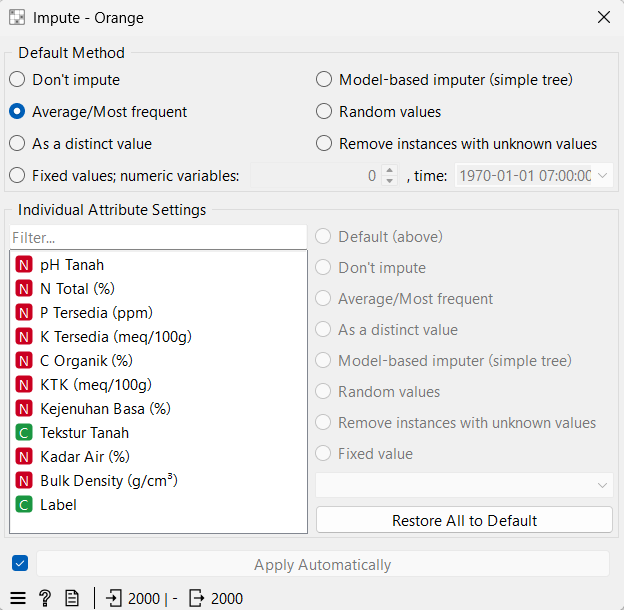
Note
Impute adalah proses untuk mengisi nilai yang hilang (missing value) dalam dataset agar data menjadi lengkap dan dapat diproses lebih lanjut. Missing value perlu ditangani karena dapat mengganggu perhitungan, terutama pada algoritma seperti K-Nearest Neighbors (KNN) yang bergantung pada perhitungan jarak.
Penggunaan Impute bertujuan untuk menjaga kualitas data sehingga proses analisis dapat berjalan dengan baik dan menghasilkan model yang lebih akurat. Tanpa penanganan missing value, hasil analisis dapat menjadi tidak valid.
Dalam Orange, metode yang umum digunakan adalah Average (mean) untuk data numerik dan Most Frequent (modus) untuk data kategorikal. Mean digunakan karena mampu merepresentasikan nilai rata-rata dari data numerik tanpa mengubah distribusi secara signifikan. Sementara itu, modus digunakan pada data kategorikal karena memilih nilai yang paling sering muncul, sehingga tetap mempertahankan karakteristik data.
Dengan menggunakan Impute, dataset menjadi lengkap dan siap untuk tahap preprocessing selanjutnya seperti normalisasi, reduksi dimensi, dan klasifikasi.
2.2 Encoding Data Kategorikal#
Fitur Tekstur Tanah diubah menjadi numerik menggunakan One-Hot Encoding.
Contoh:
Lempung → [1, 0, 0]
Pasir → [0, 1, 0]
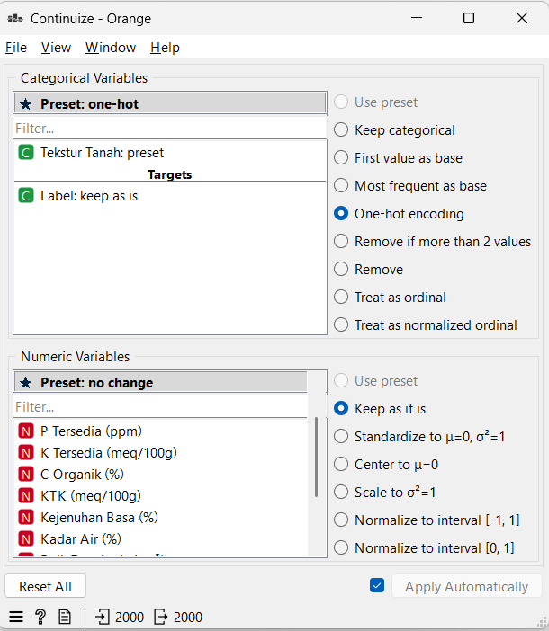
Note
Continuize merupakan proses untuk mengubah data kategorikal menjadi data numerik agar dapat diproses oleh algoritma machine learning. Hal ini diperlukan karena sebagian besar algoritma, termasuk KNN, hanya dapat melakukan perhitungan pada data berbentuk angka. Dengan menggunakan Continuize, atribut seperti tekstur tanah diubah menjadi representasi numerik menggunakan teknik seperti one-hot encoding sehingga tidak mengubah makna data aslinya.
Penggunaan Continuize bertujuan agar seluruh fitur dalam dataset memiliki format yang seragam, yaitu numerik. Tanpa proses ini, data kategorikal tidak dapat digunakan dalam perhitungan jarak sehingga model tidak dapat bekerja dengan optimal.
Hasil Encoding Kategorikal#
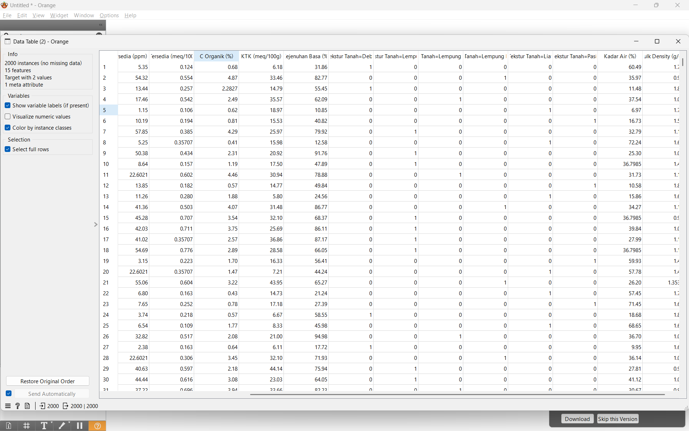
2.3 Normalisasi Data#
Normalisasi dilakukan menggunakan metode Z-Score untuk menyamakan skala data.
rumus :
Keterangan:
x = nilai data
μ = rata-rata
σ = standar deviasi
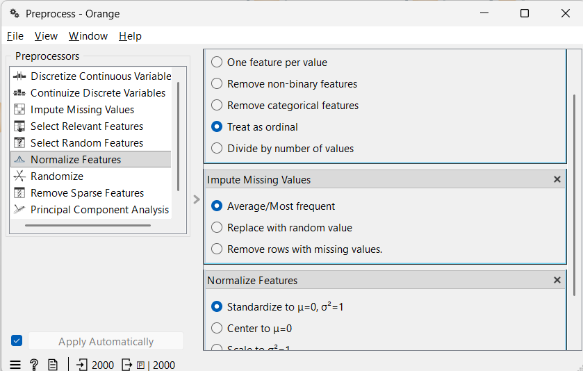
Note
Preprocess merupakan tahap pengolahan data lanjutan yang berfungsi untuk menyiapkan data sebelum digunakan dalam proses modeling. Dalam Orange, Preprocess biasanya digunakan untuk melakukan beberapa operasi sekaligus seperti imputasi, normalisasi, dan transformasi data.
Salah satu langkah penting dalam Preprocess adalah normalisasi. Normalisasi dilakukan untuk menyamakan skala antar fitur sehingga tidak ada fitur yang mendominasi perhitungan. Metode yang umum digunakan adalah Z-Score, yang mengubah data agar memiliki rata-rata 0 dan standar deviasi 1. Hal ini sangat penting dalam KNN karena algoritma ini menggunakan perhitungan jarak yang sensitif terhadap skala data.
Hasil Encoding Normalisasi Z-score#
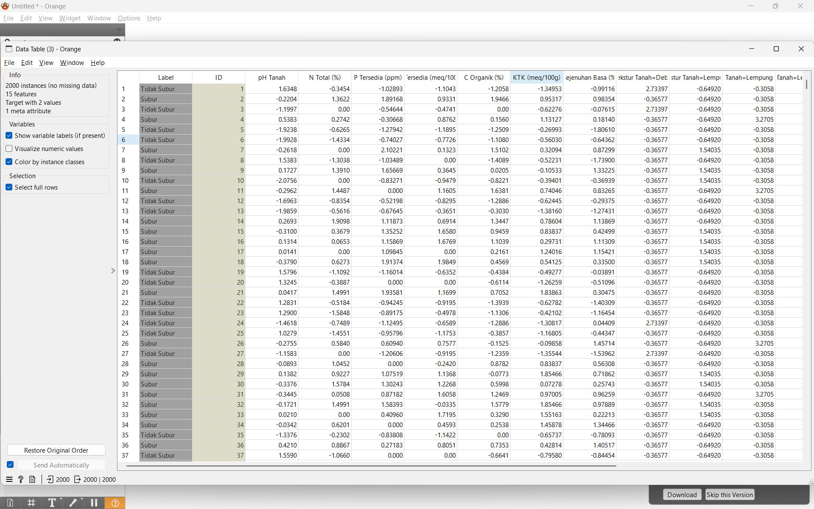
3. Reduksi Dimensi (PCA)#
Reduksi dimensi dilakukan menggunakan Principal Component Analysis (PCA).
Tujuan:#
Mengurangi jumlah fitur
Mempercepat komputasi
Mengurangi noise
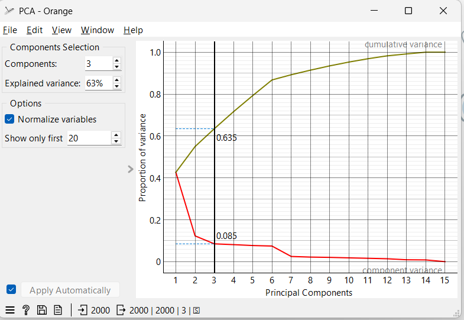
Note
PCA (Principal Component Analysis) merupakan metode reduksi dimensi yang digunakan untuk mengurangi jumlah fitur dalam dataset tanpa menghilangkan informasi penting. PCA bekerja dengan mengubah fitur asli menjadi fitur baru yang disebut principal component, yang merupakan kombinasi dari fitur-fitur sebelumnya.
Tujuan utama PCA adalah untuk menyederhanakan data, mengurangi kompleksitas, serta mempercepat proses komputasi. Dengan jumlah fitur yang lebih sedikit, proses klasifikasi seperti KNN menjadi lebih efisien tanpa harus memproses seluruh fitur awal.
PCA menghasilkan beberapa komponen utama seperti PC1, PC2, dan seterusnya. Setiap komponen memiliki tingkat kontribusi terhadap variasi data yang disebut explained variance. Komponen dengan nilai variance terbesar akan dipilih karena dianggap paling mampu merepresentasikan informasi dalam dataset.
Dalam penerapannya, jumlah komponen yang digunakan ditentukan berdasarkan total explained variance yang ingin dicapai. Umumnya dipilih komponen yang mampu menjelaskan sebagian besar variasi data, sehingga keseimbangan antara penyederhanaan data dan informasi tetap terjaga.
Hasil:#
Dipilih 3 komponen utama:
PC1
PC2
PC3
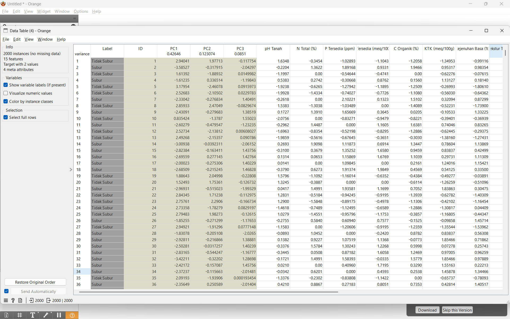
Alasan:#
Sudah cukup merepresentasikan informasi penting
Mengurangi dimensi dari 10 fitur menjadi 3 fitur
4. Pemilihan Fitur#
Setelah PCA:
Fitur yang digunakan: PC1, PC2, PC3
Target: Label (Subur / Tidak Subur)
Fitur lain diabaikan karena sudah direpresentasikan oleh PCA
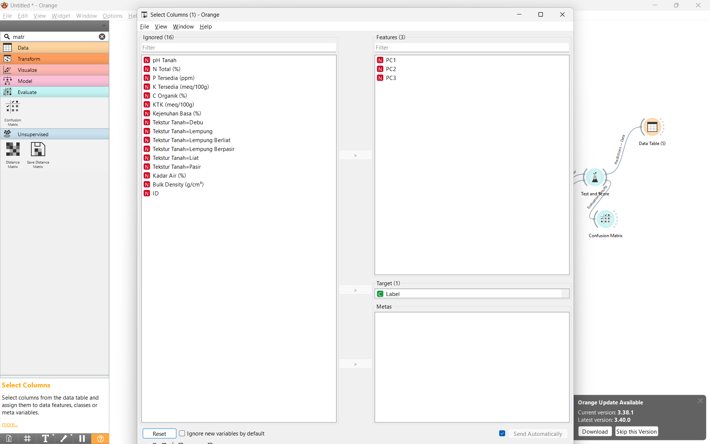
Note
Pemilihan fitur disini dilakukan agar tidak semua fitur masuk pada proses knn dan hanya fitur pc1,pc2,pc3 hasil dari PCA yang di proses di knn
5. Klasifikasi Menggunakan KNN#
Metode yang digunakan adalah K-Nearest Neighbors (KNN).
Parameter:#
K = 3 (atau 5)
Distance = Euclidean
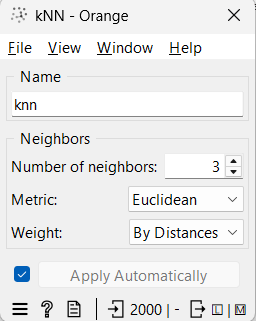
Note
K-Nearest Neighbors (KNN) merupakan metode klasifikasi yang bekerja dengan cara menentukan kelas suatu data berdasarkan kedekatan jaraknya dengan data lain. KNN tidak membangun model secara eksplisit, melainkan langsung membandingkan data baru dengan data yang sudah ada. Penentuan kelas dilakukan dengan mengambil sejumlah tetangga terdekat (K) dan memilih kelas yang paling banyak muncul di antara tetangga tersebut. Metode ini sangat bergantung pada perhitungan jarak, sehingga membutuhkan data yang sudah dinormalisasi agar hasilnya akurat.
Rumus:
Cara Kerja:#
Hitung jarak data uji ke data latih
Ambil K tetangga terdekat
Tentukan kelas berdasarkan mayoritas
6. Evaluasi Model#
Evaluasi dilakukan menggunakan 10-Fold Cross Validation.
Metrik Evaluasi:#
Accuracy#
Precision#
Recall#
F1-Score#
Hasil Evaluasi Model menggunakan Test and Score#
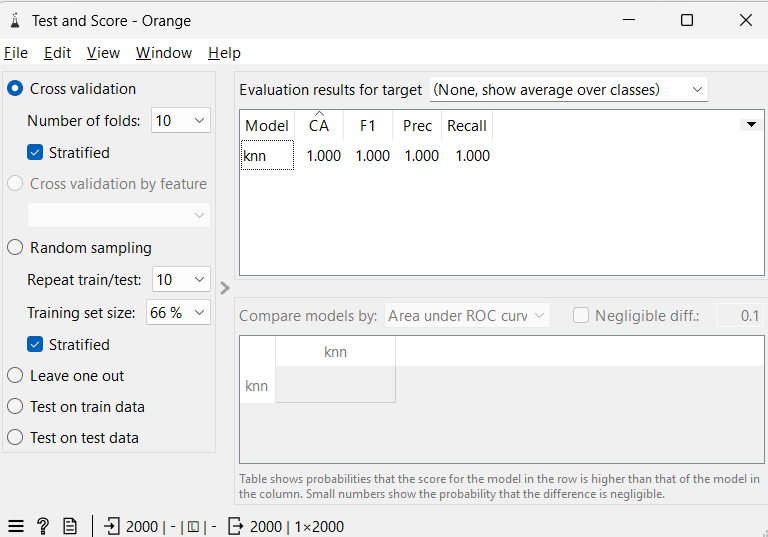
Note
Test & Score digunakan untuk mengevaluasi performa model yang telah dibuat. Widget ini menguji model menggunakan teknik seperti cross validation, di mana data dibagi menjadi beberapa bagian untuk proses pelatihan dan pengujian secara bergantian. Hasil dari Test & Score berupa metrik evaluasi seperti accuracy, precision, recall, dan F1-score yang digunakan untuk mengukur seberapa baik model dalam melakukan klasifikasi.
Hasil Confusion Matrix#
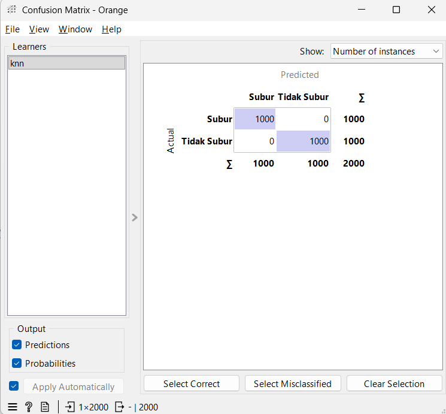
Note
Confusion Matrix digunakan untuk melihat hasil klasifikasi secara lebih detail. Matrix ini menunjukkan jumlah prediksi yang benar dan salah dalam bentuk tabel, sehingga dapat diketahui berapa banyak data yang diklasifikasikan dengan benar maupun yang mengalami kesalahan. Dari Confusion Matrix, dapat diperoleh informasi seperti true positive, false positive, true negative, dan false negative yang menjadi dasar dalam perhitungan metrik evaluasi.
Note
Alur Proses di Orange
File → Select Columns → Preprocess (Impute + Normalize) → PCA → Select Columns (PC1, PC2, PC3 + Label) → kNN → Test & Score → Confusion Matrix